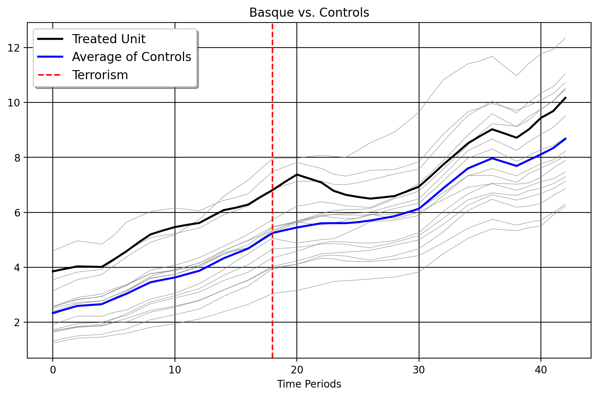

import pandas as pd
import matplotlib.pyplot as plt
from mlsynth.mlsynth import dataprep
from mlsynth.mlsynth import FDID, CLUSTERSC, PDA
import matplotlib
import numpy as np
# Set up theme for Matplotlib
def set_theme():
theme = {
"axes.grid": True,
"grid.linestyle": "-",
"grid.color": "black",
"legend.framealpha": 1,
"legend.facecolor": "white",
"legend.shadow": True,
"legend.fontsize": 12,
"legend.title_fontsize": 12,
"xtick.labelsize": 10,
"ytick.labelsize": 10,
"axes.labelsize": 10,
"axes.titlesize": 12,
"figure.dpi": 100,
"axes.facecolor": "white",
"figure.figsize": (10, 6),
}
matplotlib.rcParams.update(theme)
def plot_donors_and_treated(donor_matrix, treated_vector, pre_periods, title, ax):
for i in range(donor_matrix.shape[1]):
ax.plot(donor_matrix[:, i], color='gray', linewidth=0.5, alpha=0.8, label='_nolegend_')
ax.plot(treated_vector, color='black', linewidth=2, label='Treated Unit')
average_controls = donor_matrix.mean(axis=1)
ax.plot(average_controls, color='red', linewidth=2, label='Normalized Average of Controls')
ax.axvline(x=pre_periods, color='blue', linestyle='--', linewidth=1.5, label='Water')
ax.set_title(title)
ax.set_xlabel('Time Periods')
def clean_cargo_data(url, reference_date="March 2017"):
# Load the dataset
df = pd.read_csv(url)
# Identify airports where column 3 ever has a "-"
airports_with_dash = df.loc[df.iloc[:, 2] == "-", df.columns[0]].unique()
# Drop all rows where the airport is in the list
df_cleaned = df[~df.iloc[:, 0].isin(airports_with_dash)].copy()
# Convert column 3 values based on suffix
def convert_values(value):
if isinstance(value, str):
value = value.replace(",", "").strip() # Remove commas & spaces
if value.endswith("k"):
return float(value[:-1]) * 1_000
elif value.endswith("m"):
return float(value[:-1]) * 1_000_000
elif value.replace(".", "").isdigit(): # Handle numbers safely
return float(value)
return value # Return as-is if conversion fails
# Apply transformation to column 3
df_cleaned.iloc[:, 2] = df_cleaned.iloc[:, 2].astype(str).apply(convert_values)
df_cleaned.iloc[:, 1] = df_cleaned.iloc[:, 1].str.strip()
# Convert column 2 (dates) to real datetime format
df_cleaned.iloc[:, 1] = pd.to_datetime(df_cleaned.iloc[:, 1], format="%B %Y", errors='coerce') # Let pandas infer format
# Normalize values based on March 2017
reference_date_dt = pd.to_datetime(reference_date)
reference_values = {}
for airport in df_cleaned.iloc[:, 0].unique():
airport_data = df_cleaned[df_cleaned.iloc[:, 0] == airport]
march_2017_data = airport_data[airport_data.iloc[:, 1] == reference_date_dt]
if not march_2017_data.empty:
# Get the value for March 2017
reference_value = march_2017_data.iloc[0, 2] # Value in column 3
reference_values[airport] = reference_value
# Normalize the values
def normalize_by_reference(row):
airport = row.iloc[0] # Column 1 has airport name
if airport in reference_values:
reference_value = reference_values[airport]
row.iloc[2] = (row.iloc[2] / reference_value)*100 # Normalize to 100 at March 2017
return row
df_normalized = df_cleaned.apply(normalize_by_reference, axis=1)
df_normalized = df_normalized.groupby(df_normalized.columns[0]).filter(lambda x: len(x) == 212)
return df_normalized
# Load the dataset
url = "https://raw.githubusercontent.com/jgreathouse9/GSUmetricspolicy/refs/heads/main/data/RawData/cargo_data_parallel.csv"
# Call the function to clean the data
df = clean_cargo_data(url)
df.rename(columns={'freight_mail_value': 'Weight'}, inplace=True)
# Add the 'treated' column: 1 for CVG from April 2017, else 0
df['Amazon Air'] = ((df.iloc[:, 0] == "Cincinnati, OH: Cincinnati/Northern Kentucky International (CVG)") & (df.iloc[:, 1] >= pd.to_datetime("April 2017"))).astype(int)
df.iloc[:, 0] = df.iloc[:, 0].replace("Cincinnati, OH: Cincinnati/Northern Kentucky International (CVG)", "Connecticut Airport")
df['Time'] = df.groupby(df.columns[0]).cumcount() + 1
df = df[df['Time'] >= 50]
df['Time'] = df['Time']-49
df = df[df['Time'] < 109]
set_theme()
df.rename(columns={'month_year': 'Date'}, inplace=True)
prepped = dataprep(df, 'airport', 'Date', 'Weight', 'Amazon Air')
prepped["donor_matrix"] = prepped["donor_matrix"][:, ~np.isnan(prepped["donor_matrix"]).any(axis=0)]
# Create the plot
plt.figure(figsize=(10, 6))
# Plot each donor as a thin grey line (columns are different units)
for donor in prepped["donor_matrix"].T: # .values.T to iterate over columns (units)
plt.plot(range(1, len(prepped["y"]) + 1), donor, color='grey', linewidth=0.5)
# Plot the treated vector (y) in blue
plt.plot(range(1, len(prepped["y"]) + 1), prepped["y"], color='blue', linewidth=2, label='Treated')
# Formatting
plt.xlabel('Index')
plt.ylabel('Value')
plt.title('Treated vs Donor Matrix')
plt.grid(True)
# Limit y-axis between 0 and 200
plt.ylim(0, 400)
# Remove the legend (as requested)
plt.legend().set_visible(False)
# Show plot
plt.show()
amazonconfig = {
"df": df,
"treat": "Amazon Air",
"time": "Date",
"outcome": 'Weight',
"unitid": "airport",
"counterfactual_color": "red",
"treated_color": "black",
"display_graphs": True,
"cluster": True,
"method": "l2"
}
hub_model = PDA(amazonconfig)
ARCO_results = hub_model.fit()
/opt/hostedtoolcache/Python/3.10.16/x64/lib/python3.10/site-packages/cvxpy/problems/problem.py:1481: UserWarning: Solution may be inaccurate. Try another solver, adjusting the solver settings, or solve with verbose=True for more information.
warnings.warn(<Figure size 1000x600 with 0 Axes>